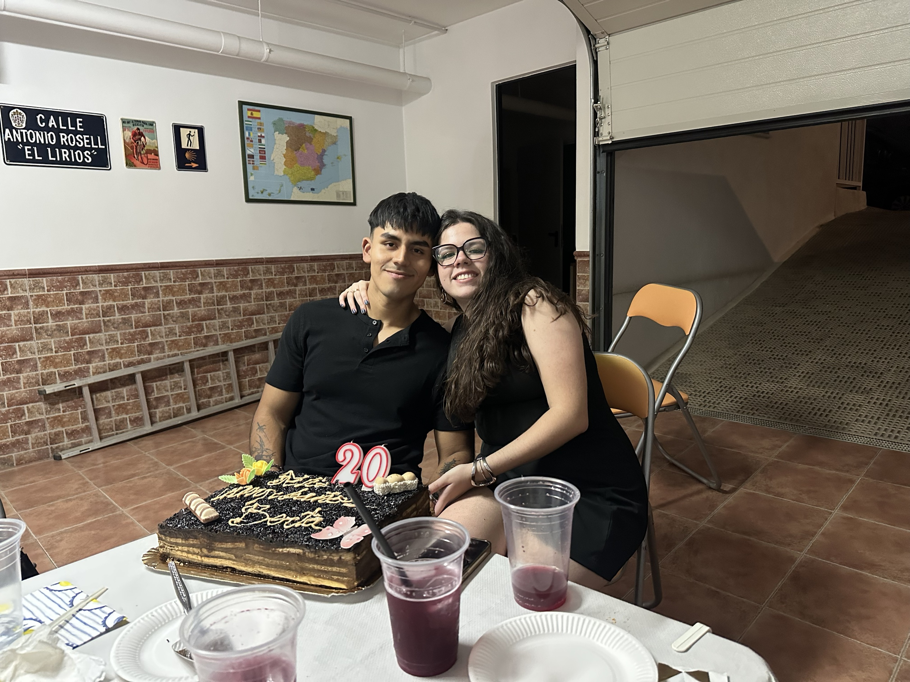
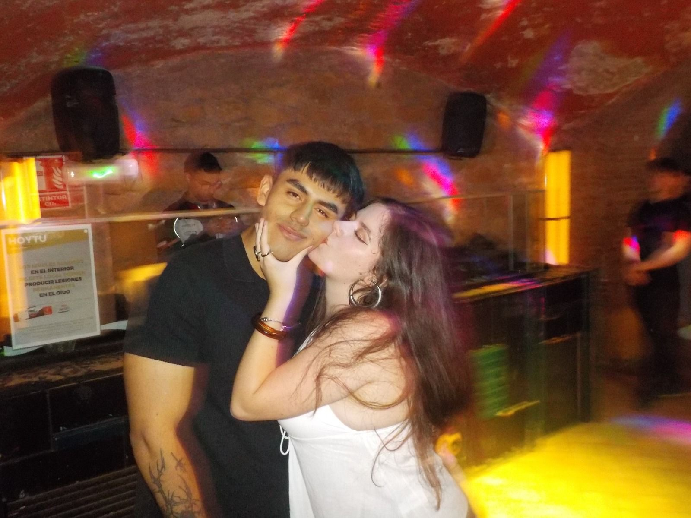
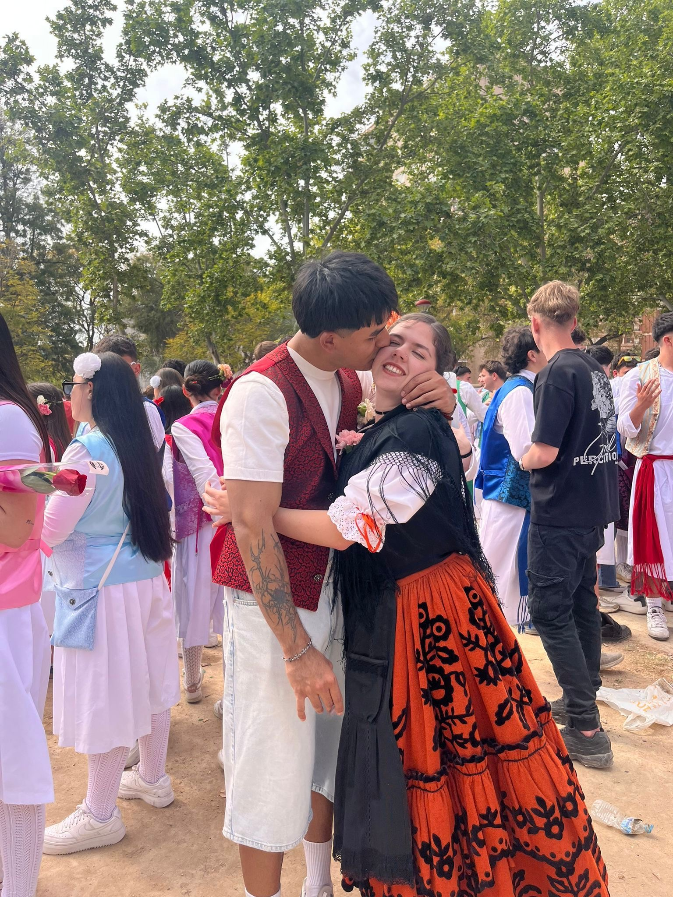

Medio año juntos
Hoy celebramos seis meses. Hice esta web para ti, con todo el cariño del mundo. Que vengan muchos más.
Bienvenida a nuestra isla. Seis meses contigo y sigues siendo lo mejor que me ha pasado.
Mi amor,
No sé muy bien cómo caben tantas cosas bonitas en solo medio año, pero contigo el tiempo se siente distinto: más cálido, más ligero, más nuestro.
Gracias por cada risa, cada abrazo y cada día en que eliges quedarte. Hice esta pequeña web para guardar aquí, poquito a poco, todos los recuerdos que nos quedan por vivir.
Con todo mi cariño 💜
Algunos momentos que no quiero olvidar.



Cada flor, un motivo para quererte.
Como el tablón del pueblo: aquí iremos clavando cada recuerdo nuevo. 🌱
Hoy celebramos seis meses. Hice esta web para ti, con todo el cariño del mundo. Que vengan muchos más.
(Aquí puedes escribir un recuerdo bonito de este mes.)
(Cuenta aquí cómo empezó nuestra historia.)